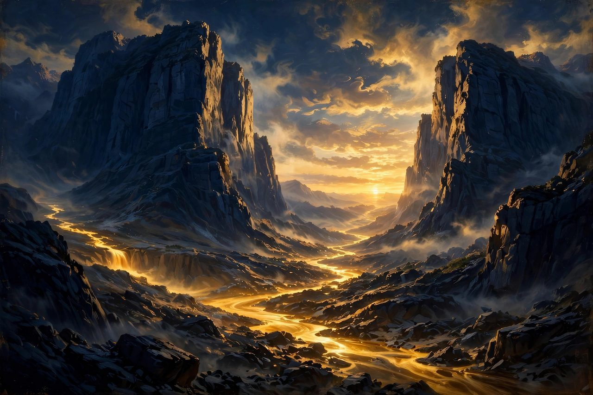
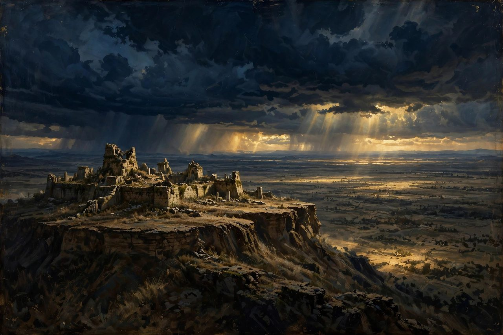
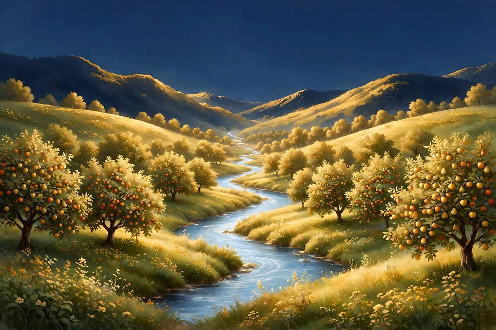

Some valleys of the Bible have not happened yet — at least, not in their fullness. The prophets saw valleys that belong to the last day: one that does not exist yet but will be split open the moment Christ's feet touch the Mount of Olives, one ancient battlefield where the nations will gather for the final war, and one promise that outlasts them all. These future valleys tell us how the story ends — and the end is that the low places themselves are lifted forever.
The New Valley at the Mount of Olives
Scripture: Zech 14:4-5 The story: Zechariah prophesied the day of the LORD, when "his feet shall stand on the Mount of Olives... and the Mount of Olives shall be split in two from east to west by a very wide valley," so that half the mountain moves north and half moves south. Through that brand-new valley God's people will flee, "as you fled from the earthquake in the days of Uzziah king of Judah," toward Azal — just as their ancestors once fled through the split waters of the Red Sea. The meaning: At the darkest moment in Jerusalem's history, God will not merely defend the city — He will remake the landscape to open an escape. The mountain that blocks the way becomes the valley that makes the way, the same Red Sea pattern written into solid rock. What it points to: It points to the personal, physical return of Jesus Christ to the very mountain from which He ascended, and to a God who makes a way out where no way exists. For the believer living in any trapped place today, it is a promise already proven in preview: the Lord who split the sea will split the mountain.
Armageddon — The Plain of Megiddo

Scripture: Rev 16:16; Judg 5:19; 2 Kgs 23:29; Zech 12:11 The story: Revelation names the gathering place of the final war "Armageddon" — Har Megiddo, "mount of Megiddo," the ancient fortress hill overlooking the Jezreel (Esdraelon) plain. That plain was Israel's great battlefield valley for centuries: Deborah and Barak defeated Sisera's chariots there, and good King Josiah was killed there by Pharaoh Neco, a loss mourned for generations "as the mourning for Hadad-rimmon in the plain of Megiddo." The meaning: God chose the most fought-over ground in Israel's memory as the address of the last battle — the place where kings have always gathered to decide who rules. The kings of the earth will assemble there to make war on the Lamb, and the Lamb will conquer them, "for he is Lord of lords and King of kings" (Rev 17:14). What it points to: It points to the end of every war and every rival throne: human rebellion makes its final stand in a valley, and Christ wins it not by the world's weapons but by His appearing and His word. For the human race, it is the last valley of violence — after it, swords become plowshares for good.Every Valley Filled — The End of Low Places

Scripture: Isa 40:4; Luke 3:5; Rev 21-22 The story: The promise John the Baptist announced at the first coming — "every valley shall be filled" — reaches its finish in the New Jerusalem of Revelation 21-22. The city has a river of the water of life and the tree of life with its leaves for the healing of the nations, but the description is striking for what is missing: no valley of the shadow, no sea of chaos, no tears, no death, no mourning, no crying, no pain — and no night. The meaning: The filling of the valleys was never only about geography. Every low place in Scripture — shadow, weeping, dry bones, trouble — is finally lifted in God's new creation, not erased from memory but healed, the way the tree's leaves heal the nations. What it points to: It points to the destination of the whole human story: a world where the low places are raised forever and God's people look back on their valleys the way Israel looked back on the Red Sea — as the place where the Lord saved them. "He will wipe away every tear from their eyes" is the last word on every valley ever walked.Part VII — What the Mountains and Valleys Mean for the Human Race
Seventy-two stories, and underneath every one of them runs the same river: the story of God and the story of us. The mountains and valleys of the Bible are not scenery. They are a map of the human race — where we have been, where we live now, and where all of it is heading.
The Past: A Race That Climbs, and a God Who Comes Down
From the beginning, the human race has been a climbing race. We climb to prove ourselves, to reach the gods, to escape judgment, to make a name. Babel was a climb. Every "mount of assembly" pride ever sat on — Babylon's king in Isaiah 14, Edom on Seir, Tyre's cherub on the mountain of God — was a climb. And every one of them fell.
But read the mountain stories again and notice who does the real traveling. God comes down on Sinai in fire. God provides on Moriah before Abraham's knife can fall. God calls from the burning bush, speaks in the still small voice, stands with a shepherd boy's nation in the valley of Elah, and breathes in the valley of dry bones. The human race's past, told honestly, is this: we kept trying to climb up to God — and God kept coming down to us. The highest expression of it is Jesus: baptized in the lowest valley on earth, preaching on mountains, praying on mountains, dying on a hill, rising, ascending from a mountain, and commissioning His church from one. The mountains and valleys of the past all converge on Him.
The Present: Where You Are Standing Right Now
Every person reading this is standing, today, in one of three places.
Some are on a mountain — a season of clarity, of answered prayer, of seeing God plainly. Scripture's word to you is the word of Zion and the Transfiguration: remember this view, and carry it down with you. Peter wanted to build shelters and stay on the mountain. Jesus led them back down — because the mountain was never the destination. It was the supply depot for the valley work below.
Some are in a valley — the shadow of death, the valley of weeping, the valley of trouble, maybe a valley of dry bones where something you loved has been dead a long time. Scripture's word to you is Psalm 23 and Hosea 2 and Ezekiel 37, all saying the same thing in different keys: you are not abandoned down there, the valley is not the end of the story, and God has a track record of turning trouble into a door of hope and bones into an army. The Syrians' lie is still preached today — sometimes by our own feelings. Feelings are not theology. The God of the hills is the God of the valleys. He has the victories to prove it.
And some are between — climbing out, not yet up, no longer at the bottom. Scripture's word to you is the Valley of Baca: pilgrims who turned their weeping into springs for the travelers behind them. That is what your story is becoming. The valley you are walking through right now, walked through with God, becomes water for somebody else's valley later. Nothing surrendered to Him down low is ever wasted.
The Future: The Great Leveling, and the City That Comes Down
The Bible ends where the mountains and valleys both give way to something better. Isaiah saw it, John the Baptist preached it, and Luke recorded it: "Every valley shall be filled, and every mountain and hill shall be made low... and all flesh shall see the salvation of God" (Luke 3:5–6). Zechariah saw the Mount of Olives split open and a new valley run with the river of God. Ezekiel saw a temple on a very high mountain and a river flowing out of it, turning the Dead Sea — the lowest, deadest valley on earth — alive with fish and trees (Ezekiel 47). Daniel saw a stone become a mountain that filled the whole earth: a kingdom that will never end.
And then the last mountain in the Bible: John is carried to "a great, high mountain" — not to climb up to God, but to watch God come down. The New Jerusalem descends. There is a river in that city, and the tree of life, and no more death, no more tears, no more valley of the shadow — because the Lamb is its light, and God dwells with man.
That is the destination of the human race for all who are in Christ: not a summit we achieved, but a city we received. Not a mountain we scaled in thinning air, holding on by our own grip — but a home brought down to us by the God who met us where we were.
So whatever ground you are standing on today — peak, valley, or the slope between — hear the whole Bible say it one more time: He is God of the hills. He is God of the valleys. And He is not finished.
The Hope Connection — Meeting others where they are in the Name of Jesus.
Christ Proclaimed. Jesus is Lord.
© 2026 The Hope Connection
← Previous part · Series index · Series index →
The Hope Connection
Meeting others where they are in the Name of Jesus — testimony and teaching on the hope that holds.